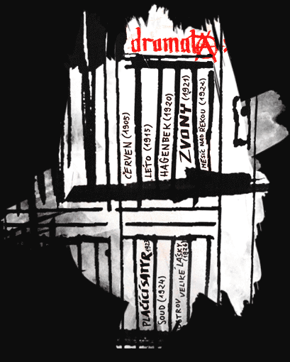

Fráňa Šrámek je dnes znám nejvíce jako básník; nejznámější je pak jeho vitalistická a impresionistická sbírka Splav. Jeho tvorba je však mnohem rozsáhlejší – patří do něj romány, povídky, dramata a ucelený obraz o autorovi nám doplní jeho korespondence.
První básnická sbírka je melancholická, ale vyznívá z ní autorova láska k životu, která je pro Šrámka typická.
Antimilitaristická básnická sbírka, nejvíce se blíží anarchistickým motivům. Některé z revolučních básní zlidověly do podoby písní, a Šrámek se tak stal všeobecně známým.
Lyrická básnická sbírka se soboteckými motivy, vrcholné Šrámkovo dílo. Jde o poezii vitalistickou a impresionistickou, tedy o oslavu a chválu obyčejného života, lásky, lidského těla. Popisy přírody evokují vjemy všech lidských smyslů.
Básnická sbírka s antifašistickými motivy – ačkoli se Šrámek v té době již stranil veřejného života, má tato sbírka společenský i politický podtext.
Povídková kniha, objevuje se zde téma prostituce a je dokonce nastoleno i téma revoluce.
Šrámkův nejznámější román, ve své době téměř kultovní, jeden ze zásadních českých impresionistických románů. Příběh citového a smyslového zrání hlavního hrdiny, Jeníka Ratkina, veliké literární přitakání životu.
V druhé části je zajímavá postava Vilíka Gabriela, který má všechny lidské i intelektuální předpoklady pro to, aby se stal se šťastným – tím se však nikdy nestane. Vilík je typ zbytečné hrdiny, kterého známe z díla Dostojevského.
Hrdinku Máňu a jejího muže spojuje pudová, smyslová a tělesná láska, Máňa je výrazný typ smyslné ženy. Až do příchodu války jsou ztělesněním životní přímosti, spokojenosti a rodinného štěstí – román je mimo jiné i velkou obžalobou války.
Impresionistické drama. Příběh Jana Skalníka, který stojí mezi dvěma svůdnými ženami, oslavuje sílu lásky, citů, vjemů v kontextu přírody; je to jakási dramatická paralela sbírce Splav.
Drama, které do jisté míry rozvíjí motivy z Léta;mladické naděje a ideály jsou zde již ovšem konfrontoványs reálným světem, v němž se degradují na všední průměr.
Výbor z korespondence z let 1915–1918 s Milkou Hrdličkovou.
Výbor z korespondence s Milkou Hrdličkovou.
